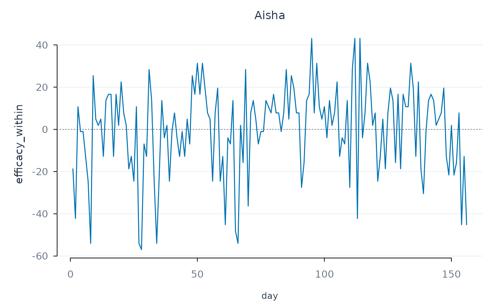

One panel per person, showing one or more variables over time. Variables
are distinguished by line type as well as colour. A horizontal reference
marks zero, which is the person's own mean after person-centring or
decomposition with preprocess_panel().
Usage
plot_series(
data,
id,
time,
vars,
subject = NULL,
reference = c("zero", "mean", "none"),
...
)Arguments
- data
Long-format data frame.
- id
Person identifier column.
- time
Column giving the order of occasions.
- vars
Variables to draw.
- subject
Persons to draw; defaults to the first person in
data.- reference
Horizontal reference line:
"zero","mean"(each variable's mean for that person), or"none".- ...
Ignored.
Examples
prepared <- preprocess_panel(srl, id = "name", time = "day",
vars = "efficacy", decompose = TRUE)
plot_series(prepared, id = "name", time = "day", vars = "efficacy_within",
subject = "Aisha")
